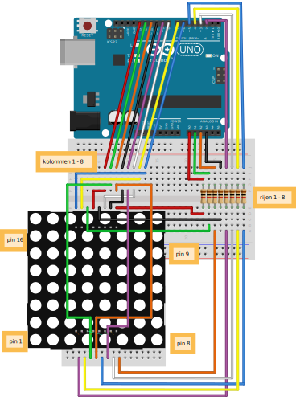

|
Led Matrix 1 Voorkennis
LED, if, for, functions (basis), joystick Leerdoelen
LED matrix, HIGH, LOW, abs, %
Benodigdheden
Introductie In deze opdracht ga je werken met een led matrix. Dit is een scherm waarin 64 led-lampjes zitten en waarmee je allerlei leuke patronen kan maken. In deze opdracht gaan we een led-lampje besturen met een joystick.
Uitleg werking LED matrix In een LED-matrix zijn de LEDs opgesteld in rijen en kolommen. Alle anode pins van de leds zijn verbonden met de anode pins van de andere leds in dezelfde rij. Ale kathode pins van de leds zijn verbonden met de kathode pins van de andere leds in dezelfde kolom. De aansluitpinnen op de LED-matrix zijn verbonden met de rijen en kolommen. Hiernaast kan je zien hoe een LED-matrix er vanbinnen uitziet. Ook kan je zien welke pins worden gebruikt om de rijen en de kolommen te besturen. Bijvoorbeeld de pin 16 (C8) links boven is voor kolom 8. De pin 1 (R5) links onder is voor rij 5. Je kan een LED aanzetten door een kolom HIGH te maken en een rij LOW te maken. Er gaat dan stroom lopen van HIGH naar LOW. De LED op het kruispunt van de rij en de kolom gaat dan aan. Op deze manier kunnen de 64 LEDs met slechts 16 aansluitingen worden bestuurd.  Bouwen van de elektronica Maak het volgende schema na. Vraag aan een mentor om te helpen met het uitzoeken van alle spullen die je nodig hebt. Maken van pin-lijsten In de code hieronder wordt een variabele met de naam Daarna wordt er een lijst gemaakt met de naam colPins. Deze lijst bevat de
8 pin-nummers van de kolommen. Als je wilt weten welke pin bestuurd moet worden
voor kolom 4 dan kan je Begin een nieuwe Arduino sketch en verwijder alle code. Neem de onderstaande code over. Probeer nu zelf de lijst met de naam Arduino pinnen als OUTPUT instellen De pinnen van een Arduino moeten nu als OUTPUT worden ingesteld omdat we waardes
naar de pinnen willen schrijven. We doen dat in een for-loop. Voor elk
pin-nummer in de lijst colPins wordt de pin als OUTPUT ingesteld. De waarde van
de pins in Maak nu het programma verder af zodat ook de rowPins als output worden ingesteld.
De waarde van de pins in LEDs besturen We gaan nu een ledje aanzetten. Maak de code hieronder af zodat het 3e LEDje in rij 6 aan gaat. Maak de code hieronder af en upload het naar de Arduino om het uit te proberen. Uitdaging
Probeer ook de volgende LEDs aan te zetten:
Je zal merken dat dit wel lukt als je een LEDje tegelijk doet. Als je probeert meerdere LEDS tegelijk aan te zetten dan gaan ook andere LEDs aan. Hiernaast kan je zien hoe dat komt. De leds op alle kruispunten waar kolom=HIGH en rij=LOW gaan branden. 
[NL] Licentie Informatie Voor al het materiaal in document geldt de licentie: Creative Commons Naamsvermelding-NietCommercieel-GelijkDelen 3.0 https://creativecommons.org/licenses/by-nc-sa/3.0/. Indien u toegang wilt tot de raw bewerkbare files om het materiaal naar uw eigen doel aan te passen, ons te helpen het materiaal te verbeteren, of het materiaal te vertalen, neem dan contact met CoderDojo Zoetermeer https://codeclub.org/en/clubs/4f8d36fb-7545-4ba9-b9fb-b379b6b87938 [EN] License Information All work in this document are licensed under the Creative Commons Attribution-NonCommercial-ShareAlike 3.0 https://creativecommons.org/licenses/by-nc-sa/3.0/. If you wish to gain access to the raw editable files in order to adapt our content to your own purposes, help us improve the content, or translate it, then please contact CoderDojo Zoetermeer https://codeclub.org/en/clubs/4f8d36fb-7545-4ba9-b9fb-b379b6b87938 .
Acknowledgements:
author: Ben Mens This document was created by CoderDojo Zoetermeer. The template design was inspired by the CoderDojo branding and visual identity, and incorporates elements from both organizations. We would like to thank CoderDojo Nederland for their their ongoing support of the CoderDojo community. |